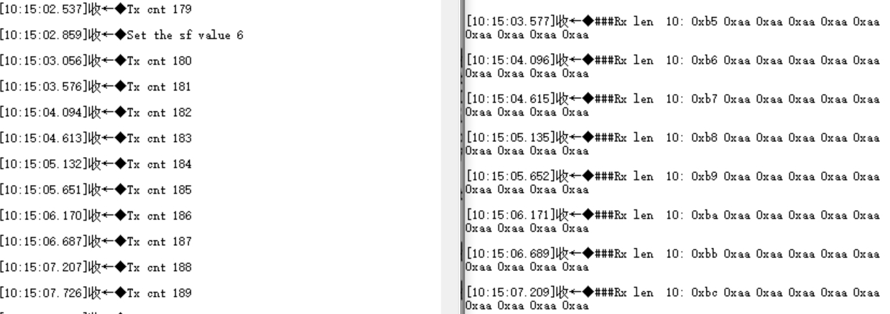

Intelligent Search说明¶
1. 功能说明¶
芯片为实现轻量化网关设备，提供智能搜索功能。可实现在接收时智能化识别信道中的SF参数，达到接收不同SF信号数据的目的。
智能搜索功能使用时，接收端需要配置SF搜索范围，发射端需要根据不同SF配置不同的前导码个数。
2 环境准备¶
PAN3740 EVB两块
Type-C USB线两条（用于供电和查看串口打印Log）
硬件接线：
使用USB线，将PC USB与EVB Type-C USB（USB->UART）相连
PC软件: 串口调试助手（UartAssist）或终端工具（SecureCRT），波特率921600
手机（nrf connect）
3 编译和烧录¶
例程位置：
..\nimble\samples\sub_1g\intelligent_search_rx
..\nimble\samples\sub_1g\intelligent_search_tx
使用keil打开项目进行编译烧录。
4. 演示说明¶
两个evb板上电，打开手机nrf connect app，搜索广播设备
b+sf tx和b+sf rx。连接并使能设备，b+sf tx设备连接使能会启动定时器，间隔500ms发送一次，b+sf rx设备连接使能启动接收，断开使能关闭发送接收。
b+sf tx设备默认sf值为SF_9，可通过app修改sf值，修改值范围为SF_5~SF_9，b+sf rx设备默认sf值为SF_5，rx端开启了自动搜索功能。
串口打印：

智能搜索log示例¶
5. 接口说明¶
int calculate_chirp_count(int sf_range[], int size, int chirp_counts[]);
发射端配置。根据sf_range和size计算智能搜索需要的前导码个数，并将前导码个数存储到chirp_counts。
RF_Err_t rf_set_auto_sf_tx_preamble(int sf, int sf_range[], int size, int chirp_counts[]);
发射端配置。每次修改SF时，需要调用此接口，接口会根据SF设置对应的前导码个数。
RF_Err_t rf_set_auto_sf_rx_on(int sf_range[], int size);
接收端配置。进入接收前，设置智能搜索SF搜索范围。
RF_Err_t rf_set_auto_sf_rx_off(void);
发射端，接收端配置。关闭智能搜索功能，恢复默认配置。
6. 特别注意¶
SDK中对低速率的参数时会自动开启LDR，为了确保收发双方都使用相同的LDR配置，所以在使用智能搜索功能时，收发双方都需要关闭LDR。
智能搜索功能支持根据实际需求配置不同的SF搜索范围，建议选择连续的SF值进行智能搜索，例如SF5~9。
7 RAM/Flash资源使用情况¶
PAN107x: TX
Flash Size: 163.53k
RAM Size: 40.12 k
PAN107x: RX
Flash Size: 163.17k
RAM Size: 40.09 k